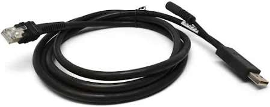
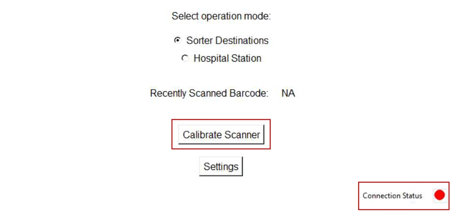

| Procedure ID | proc_set_up_replacement_zebra_ds3608sr_scanner_barcode_interface_v1 |
|---|---|
| Title | Set up a replacement Zebra DS3608-SR scanner using Barcode Interface (hardware connect + connectivity + calibration) |
| Procedure Type | recovery |
| Primary Role | L1_support |
| Support Safe | Yes |
| Capability Tags | gateway_health |
| Access Surface | apidog |
| Audience Roles | L1_support |
| Failure Pattern Tags | None |
| Validation Status | needs_sme_review |
| Merge Status | source_finalized |
Set up a replacement Zebra DS3608-SR scanner so the Barcode Interface application shows healthy connectivity and the scanner is calibrated when the app connectivity indicator is red.
Use when a Zebra DS3608-SR scanner has been replaced and needs setup so Barcode Interface connectivity is healthy; if the Barcode Interface connectivity indicator is red, calibration is required.


Responsible role: L1_support
Instruction:
On the Windows 10/11 laptop, confirm Barcode Interface.exe is installed (on the desktop with a FORTNA logo), then log into the laptop with a FORTNA account.
Expected result:
You are logged into the Windows laptop with a FORTNA account and Barcode Interface.exe is available to launch.
Responsible role: L1_support
Instruction:
Connect the RJ45 side of the USB cable to the back of the scanner dock, connect the USB to the laptop, and connect the auxiliary cable to the power adapter. Plug the power adapter into a 120 VAC outlet (x2). Confirm the dock lights up.
Expected result:
The scanner dock powers on and its lights are on.
Stop or Escalate If:
Responsible role: L1_support
Instruction:
If the scanner is uncharged, place it on the dock until the red battery symbol shown on top turns green.
Expected result:
Scanner battery indicator changes from red to green.
Stop or Escalate If:
Responsible role: L1_support
Instruction:
Launch the Barcode Interface application (should be on the desktop).
Expected result:
Barcode Interface is open and the screen is ready for connectivity status verification.
Responsible role: L1_support
Instruction:
Check the connectivity indicator at the bottom right of the Barcode Interface screen.
Expected result:
Connectivity indicator is either green or red.
Responsible role: L1_support
Instruction:
If the connectivity indicator is red, click "Calibrate Scanner" and follow the onscreen instructions until calibration completes.
Expected result:
After calibration, the operator observes the connectivity indicator change to green.
Stop or Escalate If:
Responsible role: L1_support
Instruction:
If the connectivity indicator is green, skip calibration and proceed to the next step of the overall scanner setup procedure.
Expected result:
Connectivity indicator is green and calibration is not performed.